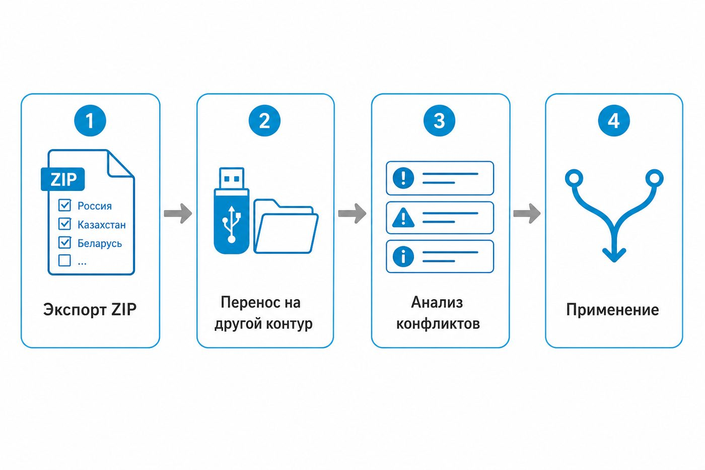
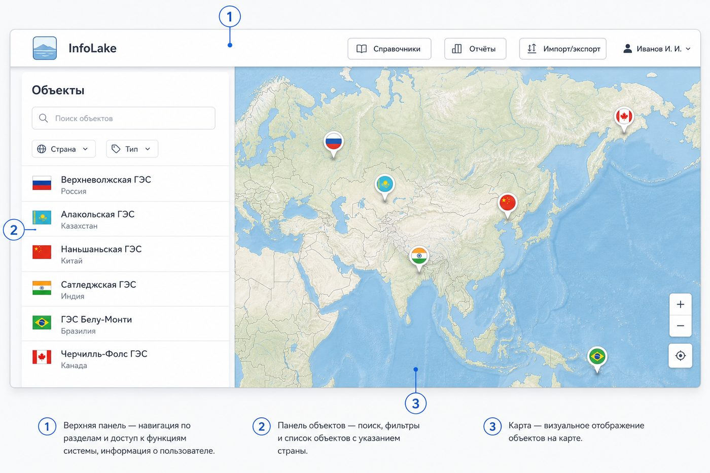
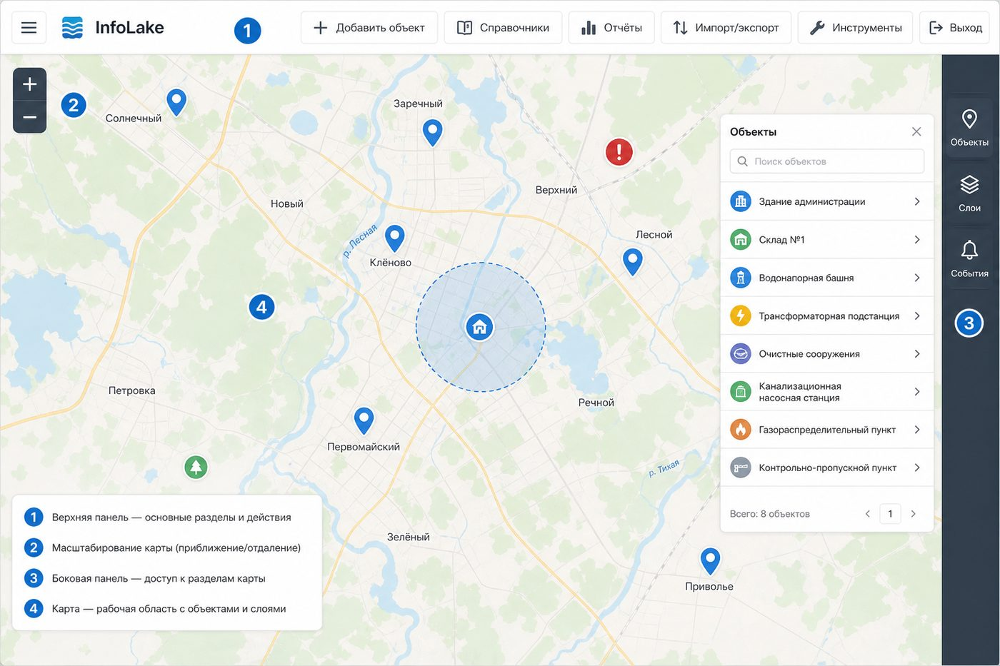
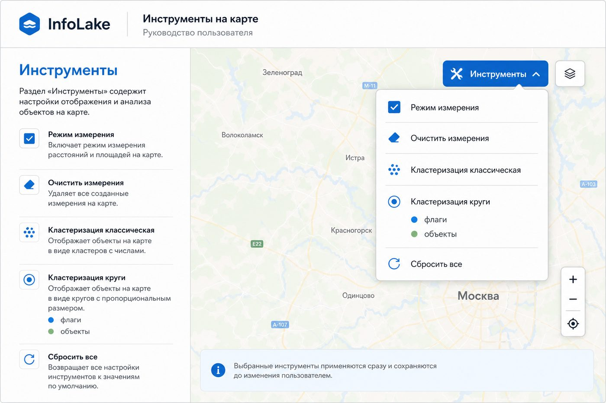
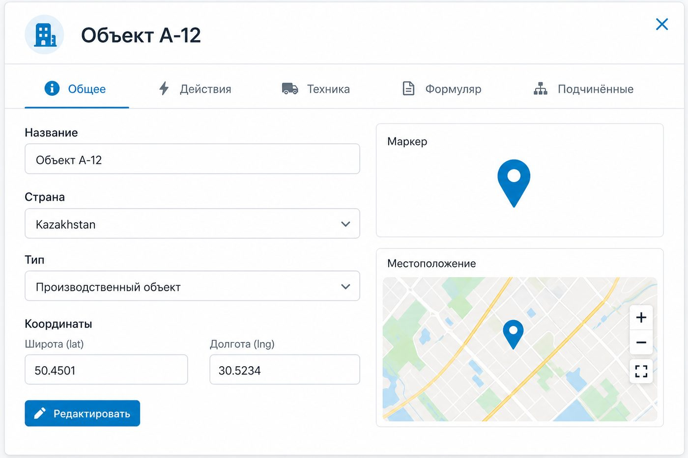
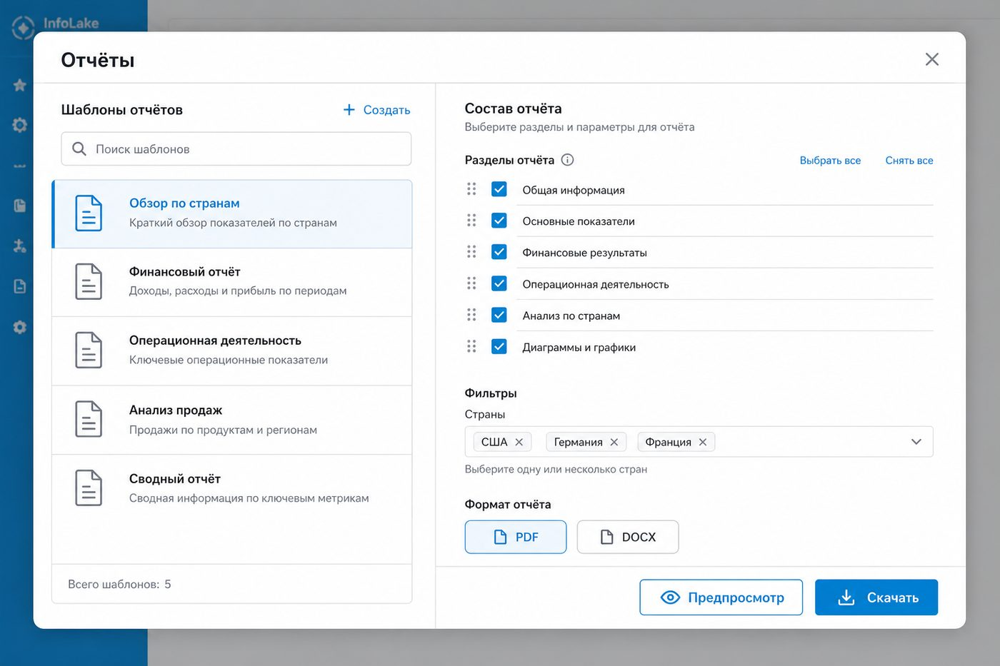
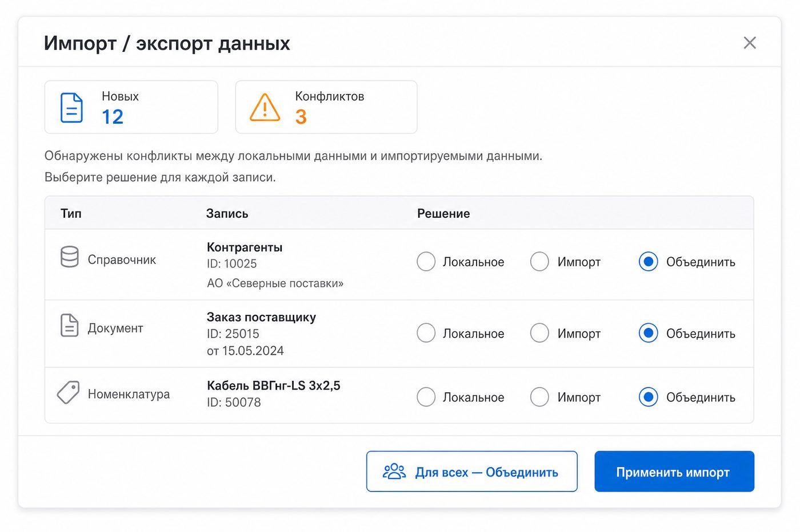

InfoLake
Система электронной разведывательной сводки: карта, объекты, формуляры, события, отчёты и обмен данными между контурами.
InfoLake объединяет интерактивную карту, карточки объектов разведки (ОР), структурированные формуляры, события, справочники техники и инструменты анализа (зоны действия, измерения, кластеризация маркеров).

http://<сервер>:5173).Доступ к разделам определяется группой безопасности. Уровни модулей: нет доступа, чтение, запись, запись и удаление.
| Модуль | Что даёт |
|---|---|
| Объекты (targets) | Карта и карточки ОР, добавление/правка/удаление |
| События | Создание и правка событий на карте |
| Формуляр / досье | Тексты и вложения по разделам |
| Персоны | Карточки лиц, связи, фото |
| Техника | Каталог и привязка к объектам |
| Отчёты | Шаблоны и выгрузка PDF/DOCX |
| Обмен данными | Экспорт (чтение) / импорт (запись) |
Если кнопка раздела не видна — у вашей группы нет соответствующего права. Обратитесь к администратору.
Слева — панель данных (вкладки объектов, событий и др.), справа — карта. В шапке: справочники, отчёты, импорт/экспорт (при наличии прав), меню пользователя.

Кнопка полноэкранного режима разворачивает карту на весь экран. Верхняя панель: логотип (меню аккаунта), действия, «Инструменты», выход из fullscreen. Справа — док вкладок и выдвижная панель списков.

Меню Инструменты (fullscreen или HUD):

Во вкладке «Слои» включайте тематические слои подложки. Зоны действия объектов показываются окружностями; наведение открывает список зон, клик закрепляет панель для выбора и подсветки.
Фильтры списка: страна, тип, название. Выбор в списке или клик по маркеру открывает карточку. «Добавить объект» — при праве записи: название, страна, тип, координаты (клик по карте или ввод).

Удаление требует уровня «запись и удаление» по модулю объектов.
Формуляр — разделы с текстом и вложениями. Разделы задаются справочником. Откройте объект → «Формуляр» → раздел → правка текста и файлов → сохранение. Страновое досье устроено аналогично.
События: точка, окружность или полигон. Укажите название, тип, страну, даты/время, цвет; нарисуйте геометрию на карте и сохраните. Фильтруйте список по дате, стране и типу.
Персоны привязаны к объектам: ФИО, должность, фото, разделы досье, вложения, связи с другими персонами (тип отношения из справочника).
Кнопка Справочники — классификаторы: типы объектов и событий, маркеры, разделы формуляра/досье, типы связей, категории техники и др.
Изменения справочников влияют на все связанные записи. Удаляйте осторожно.

Перенос данных выбранных стран между независимыми контурами в ZIP (манифест, JSON, медиа). Пользователи и группы безопасности не синхронизируются.
| Решение | Поведение |
|---|---|
| Локальное | Оставить данные текущего контура |
| Импорт | Полная замена записи и дочерних списков данными из бандла |
| Объединить | Заполнить пустые поля из бандла; склеить различающиеся тексты; добавить отсутствующие элементы списков (зоны, техника…) |

Меню по логотипу (fullscreen) или по имени в шапке:
| Ситуация | Что сделать |
|---|---|
| Не видно кнопки раздела | Проверьте права группы у администратора |
| Карта пустая / серые тайлы | Проверьте TileServer и наличие map.mbtiles |
| Не сохраняется объект | Страна, координаты и право записи обязательны |
| Конфликт при импорте | «Объединить» — дополнить; «Импорт» — заменить целиком |
| Отчёт не формируется | Право на отчёты и корректные фильтры секций |